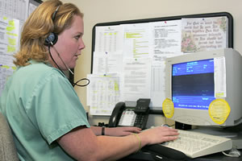
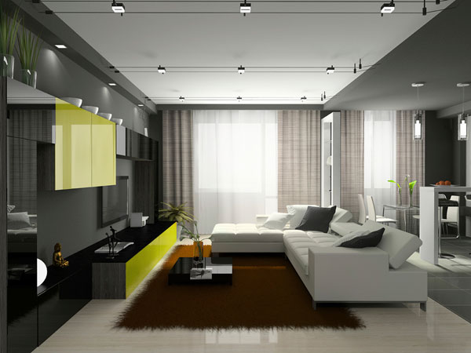
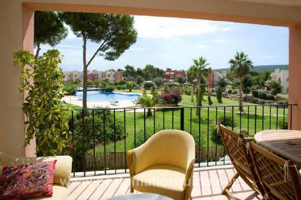
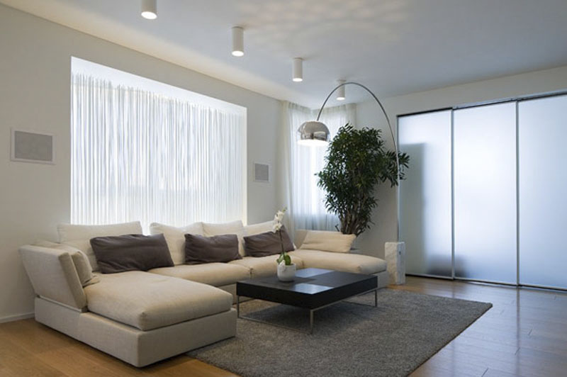

الجدولة
نحن نحرص على توفير خدماتنا للمريض او عائلته حتى قبل اجراء الفحوصات او بداء العلاج المقرر له والتي تشمل:
- بداء من المطار من لحظة الوصول، مثل الاستقبال في المطار، ونقل المريض والعائلة إلى الأماكن التي تم اختيارها.
- المساعدة في الفحص.
- النقل من و إلى العيادات الطبية ومراكز الاختبار والعلاج وسائر الحاجات الطبية.
- توفير الاتصالات، مثل الاتصال بشبكة الانترنت، وأرقام الاتصال عبر الهاتف وعناوين البريد الإلكتروني، وتوفير الهواتف الخليوي المحلية
- المساعدة في القبول في المرافق الخاصة للرعاية الصحية، بما في ذلك عملية التسجيل وتقديم المشورة للمريض او العائلة في كل الاوقات الازمة.
- خدمة الترجمة.
- فحص دوري في خلال جميع فترات الاستجمام، بما في ذلك توفير الممرضات خاصة كلما لزم الأمر للمساعدة في الاستحمام، والتعاطي مع الوصفات الطبية الدقيقة والتي تستوجب عناية الاشخاص المتخصيصين ، وإعادة التأهيل.
- توفير الخدمات الثانوية مثل غسل وكوي الملابس او الاحتياجات الخاصة او خدمة الغرفة.
- المساعدة مع جميع الوثائق المتعلقة بالرعاية لما بعد العمليات الجراحية والاستجمام، مثل الأوراق الاخلاء، والوصفات الطبية، وإلفواتير الثانوية ، وهلم جرا.
- اتخاذ الترتيبات للإقامة خلال فترة النقاهة للمريض وللعائلة، بما في ذلك مشاهدة معالم المدينة، او استاجر مركبة ، او الحجز في المطاعم، والنوادي الترفيهة، او نوادي ذوي الاحتياجات الخاصة.
- زيارة للمرافق الثقافية ومنطقة التسوق، بما في ذلك توفير المعلومات حول المنتجعات عند اقتضاء الحاجة.
- النقل الى جميع المرافق المخطط لها ضمن جدول العلاج وحتى عند المغادرة وتوفير المساعدة كلما اقتضت الحاجة وحتى تدقيق الامتعة عند المغادرة فنحن نحاول ان نقدم جميع وسائل الراحة للمريض والعائلة وفي جميع الاوقات.


